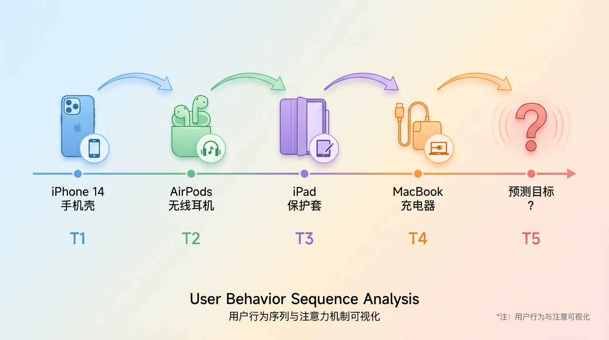
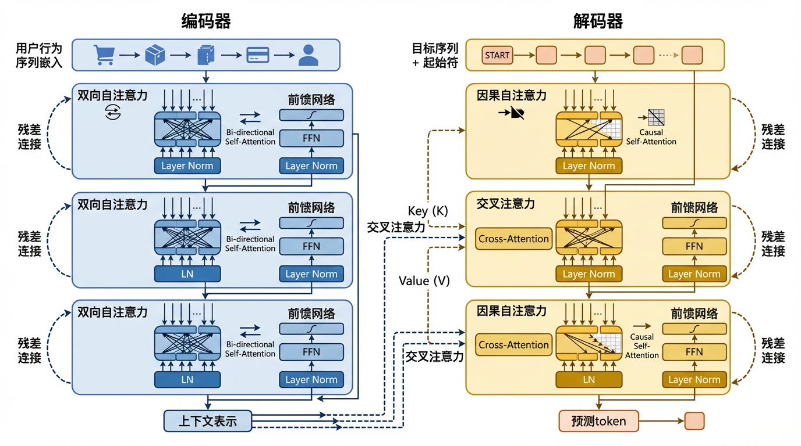
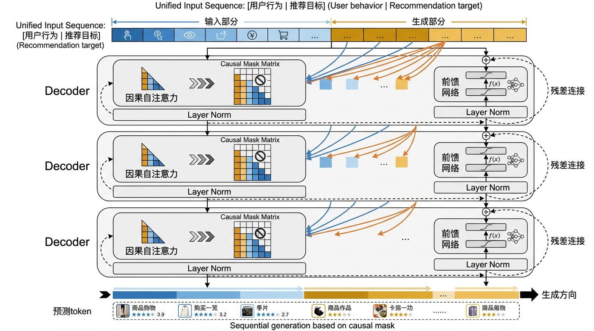
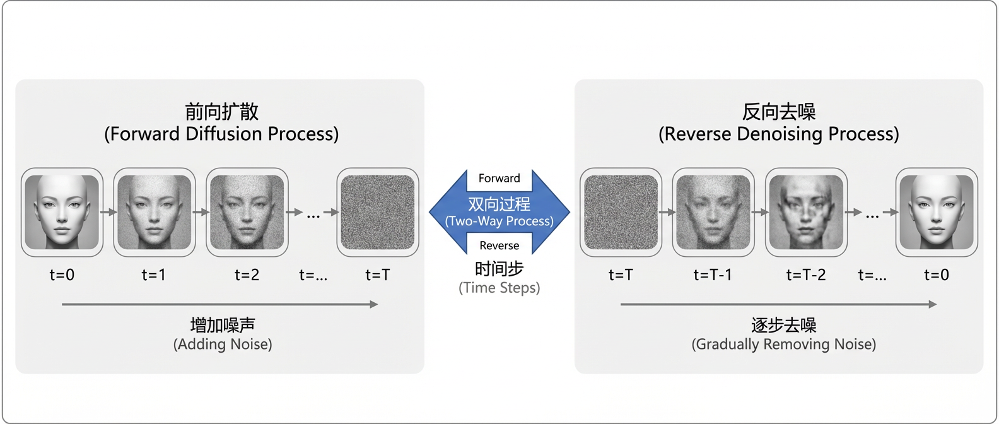

5.2. 生成式架构的基石¶
在理解了生成式推荐的核心思想之后，我们需要探讨支撑这一范式的技术基础——生成式架构。生成式推荐的核心在于将推荐问题建模为序列生成任务，而要实现高质量的序列生成，我们需要强大的模型架构作为支撑。
当前生成式推荐领域主要依赖两大类架构范式：Transformer和Diffusion模型。这两种架构虽然在生成机制上存在本质差异，但都为生成式推荐提供了坚实的技术基础。Transformer通过自回归的方式逐token生成序列，擅长捕捉序列中的因果依赖关系；Diffusion模型则通过迭代去噪的方式从噪声中恢复数据，提供了一种全新的生成视角。更重要的是，这两种架构并非互斥，而是可以互补协同，为不同的推荐场景提供灵活的技术选择。
本章将系统介绍这两大生成式架构的基础知识，重点关注它们在推荐场景中的应用要点。我们不会涉及过多的数学推导，而是强调直观理解和实践应用，帮助读者建立起对生成式架构的完整认知。
5.2.1. Transformer架构¶
自2017年《Attention is All You Need》论文 (Vaswani et al., 2017) 问世以来，Transformer架构已经成为自然语言处理领域的主流选择，并逐渐扩展到计算机视觉、语音识别等多个领域。它的成功不仅在于强大的表达能力，更在于其高度规整的计算模式——大量的矩阵乘法操作使其能够充分利用现代GPU的并行计算能力，实现远超传统RNN、LSTM等序列模型的训练和推理效率。
对于生成式推荐而言，Transformer的优势尤为明显。首先，它的自注意力机制天然适合捕捉用户行为序列中的长程依赖关系，无论用户的历史交互有多长，模型都能够灵活地关注到任意时刻的行为信号。其次，Transformer的并行化特性使其能够高效处理长序列，这对于需要建模用户完整行为历史的推荐场景至关重要。最后，Transformer架构的统一性和可扩展性，使得我们可以通过简单地堆叠更多层、增加隐层维度来提升模型容量，这为推荐模型的规模化（Scaling）提供了坚实基础。
5.2.1.1. 自注意力机制¶
自注意力机制是Transformer的核心创新 (Vaswani et al., 2017) ，也是其能够有效建模序列依赖关系的关键。在推荐场景中，自注意力机制使得模型能够自适应地关注用户历史行为中的重要信息，从而更准确地预测用户的下一步行为。
5.2.1.1.1. 注意力的直观理解¶
在理解自注意力之前，我们先从一个直观的推荐场景入手。假设用户小明在电商平台上有以下历史行为序列：
[iPhone 14手机壳] → [AirPods耳机] → [iPad保护套] → [MacBook充电器] → [?]
{kind=link}

图5.2.1 用户行为序列的时间轴可视化¶
当模型需要预测小明接下来可能购买什么时，它应该关注哪些历史行为？显然，最近的几次购买行为（如MacBook充电器）可能更重要，因为它暗示了用户当前的兴趣焦点。但是，更早的行为（如iPhone手机壳、AirPods）也提供了有价值的信息——它们表明用户是苹果生态的用户，可能对其他苹果配件感兴趣。
注意力机制的核心思想，就是让模型自动学习”在预测下一个物品时，应该关注哪些历史行为”。不同于RNN那种固定的顺序处理方式，注意力机制允许模型动态地、选择性地聚焦于序列中的任意位置，根据当前的预测需求灵活分配注意力权重。
更具体地说，注意力机制回答的是这样一个问题：给定当前的查询（Query），序列中的哪些部分（Key）最相关，它们的内容（Value）应该以多大的权重被聚合起来？ 这种”查询-匹配-聚合”的模式，使得模型能够根据上下文灵活调整信息提取策略，而不是死板地按照固定模式处理序列。
5.2.1.1.2. QKV的计算过程¶
自注意力机制的数学形式虽然看起来抽象，但其本质是一个非常直观的过程。让我们逐步拆解它的计算流程。
第一步：线性变换生成Q、K、V
给定输入序列的表示矩阵 \(\boldsymbol{X} \in \mathbb{R}^{T \times d}\)（其中 \(T\) 是序列长度，\(d\) 是特征维度），我们首先通过三个不同的线性变换，将输入映射为Query、Key、Value三个矩阵：
这三个线性变换的作用是什么？可以这样理解。
Query（\(\boldsymbol{Q}\)）：表示”当前位置想要查询什么信息”。在推荐场景中，它可以理解为”当前时刻的预测需求”。
Key（\(\boldsymbol{K}\)）：表示”序列中每个位置提供了什么信息”。它是用来与Query进行匹配的”索引”。
Value（\(\boldsymbol{V}\)）：表示”序列中每个位置实际包含的内容”。当确定了哪些位置重要之后，我们聚合的就是这些Value。
为什么需要三个独立的变换？因为”查询的需求”、“匹配的标准”和”实际的内容”在语义上是不同的。通过学习三组独立的权重矩阵，模型可以灵活地在这三个空间中进行投影和匹配。
第二步：计算注意力权重
有了Q、K、V之后，下一步是计算注意力权重，即”Query与哪些Key最匹配”。这通过计算Q和K的内积（点乘）来实现：
这里有几个关键点需要理解。
内积的含义：\(\boldsymbol{Q} \boldsymbol{K}^\top\) 得到一个 \(T \times T\) 的矩阵，其中第 \(i\) 行第 \(j\) 列的元素表示”第 \(i\) 个Query与第 \(j\) 个Key的相似度”。内积越大，说明两者越相关。
缩放因子 \(\sqrt{d_k}\)：为什么要除以 \(\sqrt{d_k}\)？这是为了防止内积的值过大。当维度 \(d_k\) 很大时，内积的方差会变大，导致softmax之后的分布过于尖锐（接近one-hot），梯度接近零。通过缩放，可以使得注意力分布更加平滑，有利于训练。
Softmax归一化：将相似度分数转换为概率分布。Softmax确保所有位置的注意力权重之和为1，同时通过指数函数放大了相似度的差异。
在推荐场景中，注意力权重矩阵 \(\boldsymbol{A}\) 的第 \(i\) 行可以理解为：在预测第 \(i\) 个位置的物品时，历史序列中每个位置应该被赋予多大的关注度。
第三步：加权聚合Value
最后一步是根据注意力权重聚合Value：
这一步非常直观：对于每个位置，我们根据注意力权重对所有位置的Value进行加权求和。权重越大的位置，其Value对最终输出的贡献就越大。
让我们用一个具体的例子来理解整个过程。假设用户的历史行为序列是
[item1, item2, item3]，当模型预测 item4 时：
Query（预测item4的需求）会与
item1, item2, item3的Key进行匹配假设计算出的注意力权重是
[0.1, 0.3, 0.6]，说明item3最相关最终的输出就是
0.1 * V_item1 + 0.3 * V_item2 + 0.6 * V_item3
这种机制使得模型能够自适应地从历史行为中提取信息，而不是简单地对所有历史物品一视同仁。
5.2.1.1.3. 多头注意力的作用¶
单个注意力头虽然能够捕捉序列中的依赖关系，但它只能学习一种”关注模式”。在实际应用中，用户的行为往往受到多种因素的影响——有时关注价格，有时关注品牌，有时关注功能。为了让模型能够同时学习多种不同的关注模式，Transformer引入了多头注意力（Multi-Head Attention）机制。
多头注意力的思想非常简单：我们不只计算一组Q、K、V，而是并行地计算 \(h\) 组（\(h\) 个”头”），每组使用独立的权重矩阵：
其中，\(\boldsymbol{W}^O\) 是一个输出投影矩阵，用于将多个头的结果融合成最终的输出。
多头注意力的直观理解：可以把每个注意力头看作一个”专家”，它们各自学习不同的关注策略。例如：
第1个头可能学会关注”同品牌”的物品（如用户买了iPhone，倾向于推荐AirPods）
第2个头可能学会关注”同类别”的物品（如用户买了手机壳，倾向于推荐贴膜）
第3个头可能学会关注”最近”的行为（如用户最近浏览的物品更重要）
通过并行计算多个注意力头，模型可以同时从多个角度理解用户的行为序列，从而获得更丰富的表示能力。
为什么不用一个大的单头？ 假设我们有 \(h=8\) 个头，每个头的维度是 \(d_k=64\)，总的参数量与一个 \(d_k=512\) 的单头相同。但多头的表达能力更强，因为每个头可以独立地学习不同的子空间表示，而单头则被迫在一个高维空间中同时学习所有模式，容易导致信息混杂。
5.2.1.2. 位置编码与序列建模¶
自注意力机制虽然强大，但它有一个天然的缺陷：它对序列中元素的顺序是不敏感的。无论是
[item1, item2, item3] 还是
[item3, item1, item2]，只要内容相同，自注意力的计算结果就完全一样。这显然不符合推荐场景的需求——用户行为的先后顺序包含了重要的时间信息，我们必须让模型能够区分”先买手机再买手机壳”和”先买手机壳再买手机”。
位置编码（Positional Encoding） 的作用就是为序列中的每个位置注入位置信息，使得模型能够感知元素的相对或绝对位置。
5.2.1.2.1. 位置编码的两种方式¶
绝对位置编码是最直观的方式：为每个位置 \(t\) 分配一个固定的编码向量 \(\boldsymbol{p}_t\)，然后将其加到输入表示上：
最经典的绝对位置编码是Transformer原论文中提出的正弦位置编码（Sinusoidal Positional Encoding） (Vaswani et al., 2017) ：
其中，\(t\) 是位置索引，\(i\) 是维度索引。这种设计的巧妙之处在于：
不同位置的编码是唯一的
通过不同频率的正弦/余弦函数，模型可以学习到”位置之间的相对关系”
编码是确定性的，不需要学习，可以外推到训练时未见过的长度
除了正弦编码，另一种常用的方式是可学习的位置编码（Learned Positional Encoding）：直接为每个位置学习一个嵌入向量。这种方式更加灵活，但无法外推到超出训练长度的序列。
相对位置编码则采用了不同的思路：不再为每个绝对位置分配编码，而是直接在注意力计算中引入位置的相对关系。例如，在计算第 \(i\) 个位置对第 \(j\) 个位置的注意力时，加入一个依赖于 \((i-j)\) 的偏置项：
其中，\(b_{i-j}\) 是一个可学习的相对位置偏置。这种方式的优势在于：
模型学习的是位置的相对关系而非绝对位置，泛化能力更强
可以更自然地处理变长序列
Transformer的不同变体采用了不同的位置编码方案。例如，BERT使用可学习的绝对位置编码，GPT使用可学习的绝对位置编码，T5和DeBERTa则采用相对位置编码。
5.2.1.2.2. 时间序列建模¶
在推荐系统中，位置编码的设计需要特别考虑时间信息的特殊性。与自然语言不同，用户行为序列不仅有顺序关系，还有真实的时间间隔信息。例如：
用户A: [item1 (1月1日)] → [item2 (1月2日)] → [item3 (1月3日)]
用户B: [item1 (1月1日)] → [item2 (3月1日)] → [item3 (6月1日)]
虽然两个序列的顺序相同，但用户A的行为是密集的短期兴趣，而用户B的行为跨越了更长的时间周期。标准的位置编码无法区分这种时间尺度的差异。
为了解决这个问题，推荐系统中的位置编码通常会引入时间戳信息。一种常见的做法是将时间戳离散化为多个时间粒度（如小时、天、周），然后为每个粒度学习独立的嵌入：
另一种做法是直接将时间间隔作为连续特征编码。例如，HSTU (Zhai et al., 2024) 等生成式推荐模型采用了相对时间位置编码（Relative Temporal Positional Encoding）：
其中，\(\Delta t_{p,t}\) 是位置 \(p\) 和 \(t\) 之间的时间间隔。对数变换可以压缩时间尺度，使得模型对长期和短期行为都有较好的建模能力。
在实践中，时间编码的设计需要根据具体业务场景进行调整。对于短视频推荐，用户的行为通常是密集的，时间间隔可能只有几秒到几分钟；而对于电商推荐，用户的购买行为可能跨越数天甚至数周。因此，选择合适的时间粒度和编码方式对模型性能至关重要。
5.2.1.3. 两种架构范式¶
在理解了自注意力和位置编码这两个核心组件之后，我们需要进一步讨论Transformer的整体架构设计。当前生成式推荐领域主要采用两种架构范式：Encoder-Decoder（编码器-解码器）架构和Decoder-Only（仅解码器）架构。这两种架构在设计理念、计算特性和适用场景上存在显著差异，理解它们的区别对于构建高效的生成式推荐系统至关重要。
5.2.1.3.1. 两种架构的结构差异¶
Encoder-Decoder架构采用双塔设计，将模型分为编码和解码两个相对独立的部分：
{kind=link}

图5.2.2 Encoder-Decoder架构示意图¶
具体而言，Encoder部分使用双向自注意力处理输入序列。以用户历史行为 \([i_1, i_2, \ldots, i_T]\) 为例，Encoder中的每个位置可以关注序列中的所有其他位置（包括前面和后面），从而获得对输入的全局理解。这种双向建模能力使得Encoder能够充分捕捉用户行为的整体模式和长期偏好。
Decoder部分则同时使用以下两种注意力机制。
因果自注意力（Masked Self-Attention）：确保生成过程的自回归性，即预测第 \(t\) 个token时只能依赖前 \(t-1\) 个已生成的token
交叉注意力（Cross-Attention）：以Decoder的隐状态作为Query，Encoder的输出作为Key和Value，实现生成过程对输入信息的动态查询
这种设计的典型代表包括原始Transformer、T5、BART等模型。在推荐领域，TIGER (Rajput et al., 2023) 最早将T5架构引入生成式推荐，OneRec等后续工作则进一步针对推荐场景优化了Encoder-Decoder的具体设计。
Decoder-Only架构则采用统一的单塔设计：
{kind=link}

图5.2.3 Decoder-Only架构示意图¶
Decoder-Only将输入和输出视为一个连续的序列，通过统一的因果自注意力机制进行处理。模型从左到右自回归地生成输出，生成部分的每个位置可以关注所有输入位置以及之前已生成的输出位置。这种架构的代表包括GPT系列语言模型，在推荐领域则有HSTU (Zhai et al., 2024) 、RecGPT (Jiang et al., 2025) 、OneRec-V2 (Zhou et al., 2025) 等工作采用。
两种架构的核心差异可以从以下维度进行对比：
维度 |
Encoder-Decoder |
Decoder-Only |
|---|---|---|
注意力类型 |
Encoder双向 + Decoder因果 + 交叉注意力 |
统一的因果自注意力 |
参数分配 |
分散在Encoder、Decoder、交叉注意力模块 |
集中在Decoder层 |
计算模式 |
Encoder并行编码 + Decoder自回归解码 |
完全自回归处理 |
序列组织 |
输入输出分离 |
输入输出拼接 |
5.2.1.3.2. 两种架构的优劣权衡¶
Encoder-Decoder架构的主要优势在于其结构化的信息处理方式。通过将输入理解和输出生成解耦，模型可以针对不同阶段采用不同的建模策略。Encoder的双向注意力能够不受因果约束地建模用户的完整行为序列，这对于捕捉用户的长期偏好和全局兴趣模式特别有利。同时，交叉注意力机制提供了一种显式的”查询-检索”模式：在生成每个推荐token时，Decoder可以动态地关注用户历史中最相关的部分，而不是被动地接受一个固定的输入表示。
这种架构特别适合输入输出异构的推荐场景。例如，当输入包含用户的多模态特征（行为序列、用户画像、上下文信息）而输出是物品的Semantic ID序列时，Encoder-Decoder的双塔设计能够自然地处理这种异构性。在OneRec (Deng et al., 2025) 的设计中，Encoder被进一步划分为多个pathway（短期pathway、长期pathway、正反馈pathway等），每个pathway专门处理一类行为信号，这种细粒度的结构化设计在Decoder-Only架构中较难实现。
然而，Encoder-Decoder架构也存在明显的效率和扩展性问题。首先，维护三组独立的注意力机制（Encoder自注意力、Decoder自注意力、交叉注意力）需要更多的参数和计算资源。其次，交叉注意力的计算开销随着输入序列长度的增加而线性增长，当用户行为序列很长时会成为性能瓶颈。更重要的是，参数分散在多个模块中降低了单个模块的容量，这在一定程度上限制了模型的规模化潜力。
相比之下，Decoder-Only架构的简洁性和统一性成为其核心优势。GPT系列模型的成功表明，在足够的数据和参数规模下，单一的Decoder架构就能同时具备理解和生成能力，无需显式的结构化设计。这种统一性带来了多方面的好处：
首先是参数效率的提升。所有参数都集中在Decoder层中，没有结构性的冗余。当我们扩展模型规模时，新增的参数能够直接用于增强核心的序列建模能力，而不会分散到多个异构模块中。这使得Decoder-Only架构在大规模预训练方面具有天然优势。
其次是工程实现的简化。只有一种注意力机制意味着计算模式高度统一，更容易进行算子融合、内存优化等底层优化。这在工业部署中尤为重要——统一的架构能够更充分地利用硬件加速器（如GPU、TPU）的计算能力，实现更高的Model FLOPs Utilization（MFU）。OneRec-V2 (Zhou et al., 2025) 的实验表明，Decoder-Only架构的MFU可以达到20%以上，而传统的Encoder-Decoder架构往往只有5-10%。
第三是与LLM生态的兼容性。当前主流的大语言模型（GPT、LLaMA、Qwen等）几乎都采用Decoder-Only架构。对于推荐系统而言，虽然由于词表和输入模态的差异，通常无法直接复用LLM的预训练权重，但可以借鉴其架构设计、优化技巧和训练框架，大大降低了从零开始构建生成式推荐系统的成本。例如，可以采用与GPT相同的模型配置（层数、hidden size、注意力头数等），复用其训练策略（学习率调度、优化器配置、混合精度训练等），甚至直接使用Hugging Face Transformers等成熟的训练框架，只需重新初始化embedding层以适配推荐场景的物品词表。
当然，Decoder-Only架构也有其局限性。最主要的是单向建模的约束：因果注意力只能从左到右处理序列，无法利用”未来”信息。虽然在实际推荐时这是必然的约束（我们不可能提前知道用户未来的行为），但在离线训练阶段，这种单向约束可能会损失一部分建模能力。另一个问题是上下文长度的压力：由于没有独立的Encoder对输入进行压缩，用户的所有历史行为都需要作为上下文输入到Decoder中，当行为序列很长时可能导致计算开销过大。
5.2.1.3.3. 推荐任务中的架构选择¶
在实际应用中，选择哪种架构需要综合考虑任务特性、数据规模和系统约束。
从任务类型来看，如果推荐系统需要显式地区分”理解用户”和”生成推荐”两个阶段，或者输入输出的模态差异较大（如输入是多模态特征，输出是物品ID），Encoder-Decoder可能更合适。典型场景包括检索式生成（从大规模候选集中生成物品ID序列）和多任务推荐（需要同时建模多种用户行为）。相反，如果任务可以被自然地表述为”序列续写”（给定历史行为，预测后续行为），Decoder-Only会更简洁高效。
从数据和模型规模来看，当有充足的数据支持大规模预训练时，Decoder-Only的扩展性优势会更加明显。GPT-3、LLaMA等模型已经证明，Decoder-Only架构可以有效扩展到千亿参数级别并展现出涌现能力（emergent abilities）。对于推荐系统，如果目标是构建一个10B甚至100B参数的基础推荐模型，Decoder-Only是更可行的选择。反之，如果数据量有限或模型规模较小（如1B以下），Encoder-Decoder的结构化设计可能更容易优化和稳定训练。
从系统部署角度看，如果对推理延迟有极致要求，需要考虑两种架构的推理特性。Encoder-Decoder可以在离线或异步场景下预先计算Encoder的输出并缓存，减少在线推理时的计算量。但Decoder-Only的统一架构更容易进行端到端的优化（如KV Cache、Speculative Decoding等技术），在实时生成场景下可能反而更高效。HSTU的工业部署经验表明，通过精心的工程优化，Decoder-Only架构可以在毫秒级延迟下完成推荐生成。
值得注意的是，架构选择并非非黑即白。一些近期工作开始探索混合架构，试图结合两者的优势。例如，OneRec (Deng et al., 2025) 在Encoder-Decoder的基础上引入了Lazy Decoder设计，让多个Decoder层共享Encoder的KV输出，在保留双塔灵活性的同时提升了参数效率。另一些工作则在Decoder-Only中加入双向预训练目标（如BERT式的masked预训练），试图缓解单向建模的局限。
5.2.1.3.4. 因果掩码机制¶
无论选择哪种架构，因果注意力掩码（Causal Masking）都是实现自回归生成的关键机制。掩码通过控制注意力矩阵中哪些位置可见、哪些位置不可见，来确保模型在预测第 \(t\) 个token时只能依赖前 \(t-1\) 个token的信息。
在数学实现上，因果掩码通过在softmax之前对未来位置施加极大的负值（通常是-inf）来实现：
其中掩码矩阵 \(M\) 的定义为：
这种设计确保了 \(A_{ij} = 0\) 当 \(j > i\) 时，即第 \(i\) 个位置无法看到第 \(j\) 个位置的信息。
在推荐场景中，因果掩码不仅保证了训练推理的一致性，还带来了训练效率的提升。虽然生成是自回归的（一个一个token依次生成），但在训练时我们可以并行计算所有位置的损失函数。给定一个用户行为序列 \([i_1, i_2, \ldots, i_T]\)，模型可以同时学习：
基于 \([i_1]\) 预测 \(i_2\)
基于 \([i_1, i_2]\) 预测 \(i_3\)
…
基于 \([i_1, \ldots, i_{T-1}]\) 预测 \(i_T\)
所有这些预测任务在一次前向传播中完成，而因果掩码确保了每个预测只使用了”合法”的历史信息。这种并行化训练是Transformer相比RNN的重要优势之一。
在实际应用中，研究者还发展出了定制化的掩码策略以适应推荐场景的特殊需求，常见策略如下。
Session-level Masking (Yan et al., 2025) ：当用户行为被划分为多个独立的会话时，可以设计掩码使得模型只关注当前会话内的行为。具体实现是在跨会话边界处设置掩码，阻止信息跨会话流动。这在建模用户多场景行为（如同一用户在不同时段的购物、浏览、搜索行为）时特别有用。
Task-specific Masking (Han et al., 2025) ：在多任务学习中，可以为不同任务设计不同的掩码模式。例如，在同时优化点击率和转化率时，可以让CTR任务看到完整的历史序列，而CVR任务只看到已点击的物品子序列，从而更精准地刻画不同粒度的用户意图。
Bidirectional Prefix Masking：对于用户的静态特征（如性别、年龄、常驻城市），我们希望模型能够双向地理解这些信息。一种做法是将这些特征放在序列开头作为”prefix”，并为它们设置双向掩码（即prefix内部可以互相看到），而后续的行为序列仍然保持因果掩码。HSTU等模型采用了类似的设计。
这些定制化掩码策略体现了Transformer架构的灵活性——通过简单地修改掩码矩阵，我们可以精确控制模型的信息流动方式，而无需改变模型的核心计算逻辑。这为推荐系统的精细化建模提供了丰富的设计空间。
通过以上讨论，我们系统梳理了Transformer架构的核心机制——自注意力、位置编码、以及Encoder-Decoder和Decoder-Only两种主流架构范式。在实践中，架构选择没有绝对的优劣之分，而是需要根据具体的任务目标、数据条件和系统约束进行权衡。
5.2.2. Diffusion模型¶
在深入了解了Transformer这一自回归生成架构之后，我们来探讨另一种重要的生成范式——Diffusion模型。与Transformer的逐token顺序生成不同，Diffusion模型提供了一种全新的生成视角：通过迭代去噪的过程从随机噪声中恢复目标数据。
5.2.2.1. 多样化的生成范式¶
Transformer通过自回归的方式逐个生成token，本质上是一种序列化的生成过程——模型需要按照固定的顺序依次预测下一个token，每个token的生成都依赖于之前已生成的所有token。这种因果依赖关系虽然保证了生成的逻辑一致性，但也带来了一些局限性：生成速度受限于序列长度，难以并行化；对于某些任务，严格的顺序约束可能并非必需。
与Transformer的序列生成不同，Diffusion模型（扩散模型）提供了一种全新的生成范式。它不是通过逐步添加token来构建序列，而是从纯噪声开始，通过迭代去噪的过程逐步恢复出目标数据。这个过程类似于雕刻：艺术家不是一笔一画地绘制，而是从一块模糊的石料中逐步雕琢出清晰的形象。Diffusion模型的这种”全局并行去噪”特性，使其在某些场景下能够突破自回归模型的限制，为生成式推荐提供了新的技术路径。
更重要的是，Diffusion模型与Transformer并非对立关系，而是互补的。在实际应用中，许多先进的Diffusion架构（如DiT (Peebles and Xie, 2023) ）实际上采用Transformer作为其去噪网络的骨干，将两者的优势结合起来。在推荐系统中，Diffusion模型既可以独立使用，也可以与Transformer协同工作，为不同的推荐场景提供灵活的技术选择。
5.2.2.2. Diffusion模型的核心机制¶
Diffusion模型的核心思想可以概括为以下两个互逆的马尔可夫过程。
前向扩散过程：从真实数据出发，通过逐步添加高斯噪声，经过 \(T\) 步得到近似纯噪声的状态。
反向去噪过程：从随机噪声开始，通过学习到的去噪网络，逐步去除噪声，最终恢复出真实数据。
这个过程类似于雕刻：前向过程是将一座精美的雕像逐渐侵蚀成一块模糊的石料，而反向过程则是从这块石料中雕琢出原来的形象。模型的训练目标就是学习这个反向去噪过程，使其能够准确地逆转前向扩散。
{kind=link}

图5.2.4 前向扩散与反向去噪过程¶
根据操作空间的不同，Diffusion模型可以分为两大类。
数据空间扩散模型（如DDPM (Ho et al., 2020)）：直接在原始数据空间进行扩散和去噪，理论上更直接，但计算开销较大。
潜在空间扩散模型（如Stable Diffusion (Rombach et al., 2022)）：先将数据压缩到低维潜在空间，在其中进行扩散和去噪，显著提升效率。
在推荐系统中，潜在空间扩散模型的应用更为普遍，因为推荐场景需要处理大规模的用户行为序列，潜在空间既能降低计算成本，又能提供更紧凑的语义表示。
此外，为了让生成过程能够受到用户历史行为等条件的控制，研究者发展了条件扩散模型，通过直接拼接、交叉注意力或分类器引导等方式将条件信息注入去噪网络。
关于Diffusion模型的详细数学公式、训练目标、采样过程以及在推荐场景中的特殊设计（如噪声尺度控制、两种参数化方式的选择等），我们将在 9.1节 进行系统深入的讲解。
5.2.2.3. Diffusion的推荐应用¶
在推荐系统中，Diffusion模型提供了一种全新的生成范式，主要应用在以下几个方面。
特征增强与表示学习：许多方法利用Diffusion模型的生成能力来增强用户或物品的表示。例如，通过在潜在空间对用户历史行为进行扩散和去噪，可以生成更加鲁棒的用户embedding，缓解数据稀疏性问题。同时，Diffusion过程中的多步去噪也可以看作是一种数据增强手段，为下游任务提供更丰富的训练样本。DiffuASR (Liu et al., 2023)、CausalDiffRec (Zhao et al., 2025) 等方法正是这一方向的代表（详见 9.2节）。
序列生成与推荐：Diffusion模型可以直接用于生成推荐物品序列。与自回归模型不同，Diffusion可以并行地对整个序列进行去噪，生成过程不受严格的顺序约束。DiffRec (Wang et al., 2023)、DreamRec (Yang et al., 2023) 等方法将扩散过程本身作为推荐模型的核心组件（详见 9.3节）。
多模态信息融合：在多模态推荐场景中，Diffusion模型可以作为不同模态特征的融合桥梁。例如，MCDRec (Ma et al., 2024)、LD4MRec (Yu et al., 2023) 等方法将文本、图像等多模态信息编码到统一的潜在空间，通过条件扩散生成融合后的推荐结果，实现跨模态的语义对齐。
协同过滤与图结构建模：一些研究将Diffusion过程引入到协同过滤和图神经网络中，如CF-Diff (Hou et al., 2024)、GiffCF (Zhu et al., 2024) 等方法通过在用户-物品交互图的潜在表示上进行扩散，捕捉更复杂的高阶邻居关系和全局协同信号。
需要注意的是，虽然Diffusion模型在生成质量和灵活性上具有优势，但其多步迭代的采样过程也带来了推理延迟的挑战。在工业部署中，需要在生成质量和实时性之间做出权衡，通过采样加速、模型蒸馏等技术来满足线上服务的延迟要求。关于Diffusion推荐的详细技术原理，请参阅 9.1节。